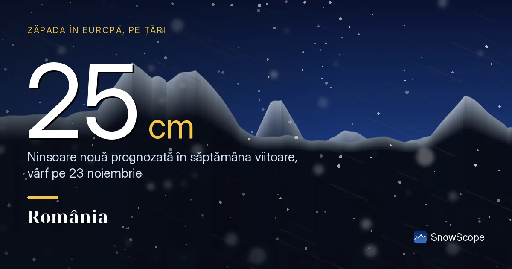
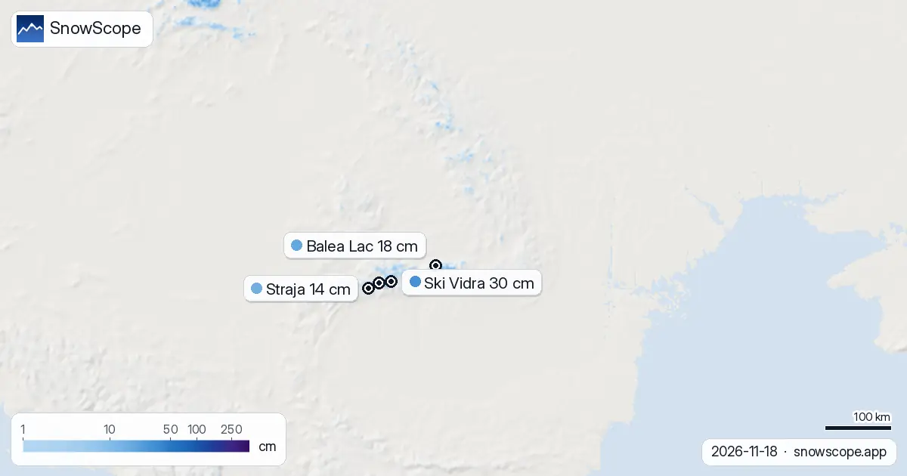
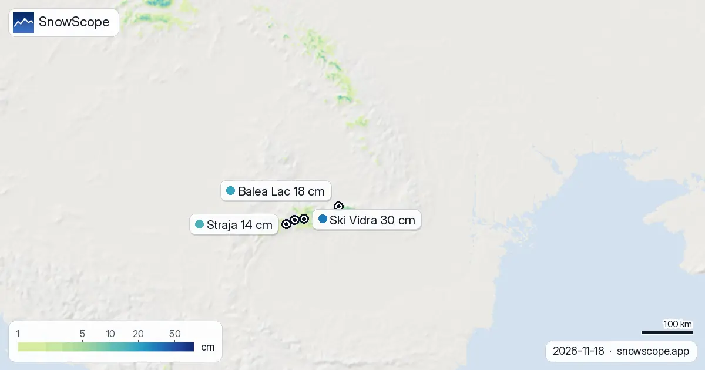

România: 25 cm ninsoare nouă prognozată în săptămâna viitoare, vârf pe 23 noiembrie
Ninsoarea sosește pe vârfurile înalte ale României. În următoarele șapte zile, modelele arată că vor cădea până la 25 cm ninsoare nouă, cu cea mai abundentă cădere pe 23 noiembrie când se așteaptă 12 cm la altitudine mare.
Vezi prognoza de zăpadă pentru Ski Vidra în aplicația SnowScopeGrosimea zăpezii, alerte și harta 3D, gratuit.
Ninsoare abundentă sosește săptămâna viitoare
Prognoza pentru următoarele trei zile este modestă: până la 9 cm ninsoare nouă în zonele montane, cu cea mai mare parte cădând peste 1500 m. Dar din 23 noiembrie înainte, un sistem meteorologic mai mare va aduce mult mai multă. În acea singură zi, modelul nostru arată 12 cm ninsoare nouă. Până la finele săptămânii viitoare, totalul zăpezii proaspete pe teritoriul stațiunilor de schi din România ar putea ajunge la 25 cm.
Aceasta este semnificativă pentru un lanț muntos la mijlocul noiembrie. Ninsoarea în această perioadă a anului este adesea subțire și înveșmântată parțial, deci acest eveniment va ajuta la construirea unei baze invernale mai stabile. Vârfurile cele mai înalte, deasupra 2000 m, vor colecta cea mai mult: încep deja să acumuleze adâncime, iar precipitațiile săptămânii viitoare vor adăuga substantial apa stocată în zăpada.
| Stațiune | Grosimea zăpezii | Zăpadă nouă, 72 h | Zilele următoare | Vârf |
|---|---|---|---|---|
| Ski Vidra | 30 cm | 7 cm | 5 cm | 1.974 m |
| Balea Lac | 18 cm | 6 cm | 5 cm | 2.032 m |
| Straja | 14 cm | 3 cm | 3 cm | 1.865 m |
| Parâng | 9 cm | 7 cm | 5 cm | 1.768 m |
| Havas Bucsin | 9 cm | 2 cm | 5 cm | 1.494 m |

Unde cade zăpada cel mai abundent
Retezatul este în frunte. În ultimele 72 de ore, a primit 55 cm ninsoare nouă, mult mai mult decât orice altă zonă din România. Munții Rodnei urmează cu 21 cm în trei zile, iar Munții Parângului cu 18 cm. Aceste trei lanțuri sunt în prezent cele mai umede zone ale țării și vor continua probabil să primească cea mai abundentă acumulare în săptămâna viitoare.
Acoperirea cu zăpada este concentrată deasupra 1700 m. Între 1500 și 2000 m, doar 56 la sută din teren este alb. Deasupra 2000 m, fiecare pantă este acoperită. Sub 1500 m, ninsoarea este rară; cele mai multe văi joase și versanți rămân goi.

Stațiuni: adâncimea actuală și ce vine
Dintre cele 52 de stațiuni de schi pe care le modelez în România, doar 14 au zăpadă măsurabilă azi. Ski Vidra conduce cu 30 cm adâncime și 7 cm din ultimele trei zile. Balea Lac ține 18 cm. Acestea două sunt opțiunile tale cele mai bune pentru schi în următoarele câteva zile.
Peste următoarele trei zile, stațiunile vor adăuga doar cantități mici: Ski Vidra așteaptă aproximativ 5 cm mai mult, la fel ca Balea Lac. Dar după 23 noiembrie, ninsoare proaspătă va ajunge și la elevații mai joase. Straja, Parâng și Havas Bucsin sunt toate relativ joase; vor avea nevoie de căderi mai abundente din săptămâna aceasta pentru a construi baze skiabile.
Apa stocată și eliberată lent
Din punct de vedere hidrologic, această zăpadă contează pentru ciclul apei de munte. Ninsoarea care cade acum pe teren înalt va stoca apă pe tot parcursul iernii și o va elibera treptat în primăvară și începutul verii când topirea începe. Lanțurile Retezatului și Rodnei sunt deosebit de importante: alimentează râuri care furnizează apă văilor din aval.
Linia zăpezii se află la 1700 m azi. După 23 noiembrie, se poate coborî mai jos pe măsură ce aer mai rece se deplasează cu precipitațiile. Dacă temperaturile rămân blânde, o parte din ninsoarea nouă la elevație medie ar putea se topească rapid, dar vârfurile înalte ar trebui să rețină totul.
Schimbare de pattern: prognoza pentru șapte zile
Acoperirea cu zăpadă s-a micșorat drastic în ultima zi. Pe 11 noiembrie, aproximativ 8370 de kilometri pătrați din Carpați erau albi; azi, doar 3580 de kilometri pătrați arată zăpadă. Aceasta este normal pentru noiembrie pe măsură ce ninsoarea din începutul sezonului se topește în perioadele calde. Vestea bună este că prognoza ar trebui să inverseze această tendință din 23 noiembrie înainte.
În săptămâna 26 noiembrie - 2 decembrie, sunt posibili până la 33 cm ninsoare nouă. Acea a doua săptămână de toamnă târzie ar putea livra condiții invernale mai solid decât a fost aceasta.
Ce să urmărești
Retezatul performează foarte bine și va fi zona cea mai bogată în zăpadă pe tot parcursul săptămânii viitoare. Dacă ai acces la acel lanț, oferă condițiile cele mai fiabile. În contrast, stațiunile joase ca Havas Bucsin se luptă; vor avea nevoie de cea mai mare parte a zăpezii din săptămâna viitoare pentru a deveni skiabile. Incertitudinea adâncimii zăpezii este mare la elevații joase: acoperirea subțire poate ascunde rocile și terenul aspru.
Sfaturi pentru schiori
- Ski Vidra și Balea Lac au cea mai multă zăpadă acum; planifică vizite acolo în următoarele două zile dacă vrei adâncime fiabilă.
- După 23 noiembrie, verifică Munții Retezatului și Rodnei pentru cea mai proaspătă zăpadă și acumularea cea mai adâncă.
- Stațiunile joase sub 1600 m nu vor fi fiabile până după 25 noiembrie, odată ce cea mai mare parte a zăpezii din săptămână a căzut.
- Deasupra 2000 m, tot terenul este acoperit cu zăpadă acum și va rămâne așa. Rutele înalte sunt cea mai sigură alegere pentru tura din începutul sezonului.
- Înainte de a te aventura off-piste, verifică cel mai recent buletin avalanșelor oficial al serviciului de prognoză montană al României.
About these numbers
Resort snow depths are the deepest snow on the resort's upper slopes from the SnowScope snow model (about 1 km, run of 18 noiembrie); they are estimates for an area, not a measurement at one point. Station values are measurements on the date shown. Forecasts can change. Always read the official avalanche bulletin before going off-piste.
Cite this report
For research, teaching or the press: the numbers and charts are free to reuse under CC BY 4.0 with this citation.
SnowScope (2026), România: 25 cm ninsoare nouă prognozată în săptămâna viitoare, vârf pe 23 noiembrie, https://snowscope.app/blog/ro/2026/11/romania-snow-on-the-way-18-november-2026.html, accessed 2026-11-18
SnowScope (Atlas Labs). (2026, November 18). România: 25 cm ninsoare nouă prognozată în săptămâna viitoare, vârf pe 23 noiembrie. SnowScope snow reports. https://snowscope.app/blog/ro/2026/11/romania-snow-on-the-way-18-november-2026.html
BibTeX
@misc{snowscope2026romaniasnowontheway18nov,
author = {{SnowScope (Atlas Labs)}},
title = {România: 25 cm ninsoare nouă prognozată în săptămâna viitoare, vârf pe 23 noiembrie},
year = {2026},
month = nov,
howpublished = {\url{https://snowscope.app/blog/ro/2026/11/romania-snow-on-the-way-18-november-2026.html}},
note = {Published 2026-11-18 13:46 UTC; accessed 2026-11-18}
}· CC BY 4.0 · Methods, data and tools →
Ski Vidra: snow and temperature by height, this winter vs last (tools) →
Follow Ski Vidra
Gratuit: un mesaj când vine zăpadă nouă și prognoza în fiecare dimineață.